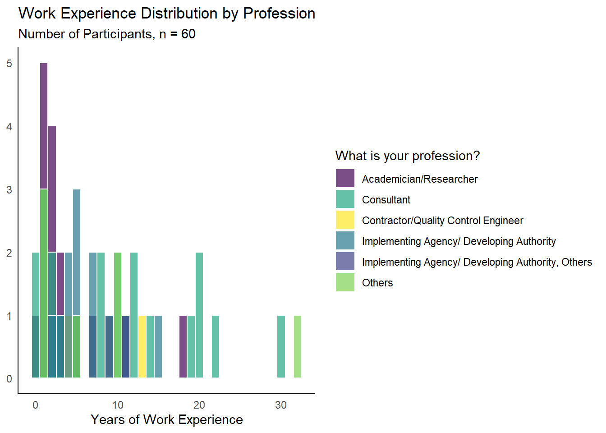
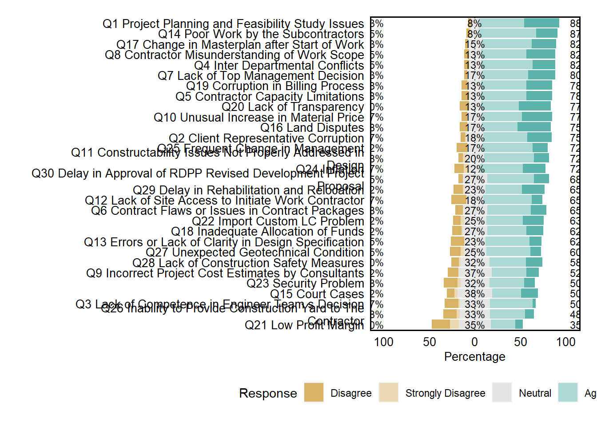

![]()
| Statistic | Value |
|---|---|
| Minimum | 0.2 |
| 1st Quartile (Q1) | 1.9 |
| Median | 5 |
| Mean | 7.3 |
| 3rd Quartile (Q3) | 10 |
| Maximum | 32 |
| Standard Deviation | 7.2 |
Methodology
The analysis involves assessing the reliability of survey questions using Cronbach’s alpha and identifying underlying factors through factor analysis. The visualizations aim to provide insights into the relationships between survey questions and the factors they contribute to.
To assess internal consistency, Cronbach’s alpha analysis is employed on Likert-scale questions related to various aspects of project management. The derived alpha coefficient serves as a reliability indicator for the survey instrument.
Factor analysis, is then conducted to identify latent constructs influencing project execution. The loadings obtained from this analysis reveal the strength and direction of relationships between surveyed variables and the identified factors. The resulting graphical representation provides a clear overview of the factors influencing project activities, aiding researchers and practitioners in understanding the dynamics within the construction industry in Bangladesh.
Analysis of the Respondents
As shown in the table, the average work experience of the participants of this study is calculated as 7.3 years. The minimum value of 0.2 indicates that there are participants with relatively minimal work experience. The 25th percentile, represented by Q1, is 2 years. This implies that a quarter of the participants have a work experience of 2 years or less. The median, or the 50th percentile, is 5 years. This suggests that half of the participants have a work experience of 5 years or less, emphasizing the middle point in the distribution. The 75th percentile, represented by Q3, is 10 years. This indicates that three-quarters of the participants have a work experience of 10 years or less. The maximum value of 32 years indicates the highest recorded work experience among the participants.The standard deviation of 7.2 reflects the variability or dispersion in the work experience data. A higher standard deviation suggests a wider range of work experience values.
Figure 1 shows the work experience distribution of the study participants, color-coded by their profession

Likert-Scale

Cronbach Analysis
| No. | Raw Alpha | Std. Alpha | G6(SMC) | Avg. r | S/N | ASE | Mean | SD | Median r |
|---|---|---|---|---|---|---|---|---|---|
| 1 | 0.89 | 0.89 | 0.96 | 0.2 | 7.8 | 0.02 | 3.68 | 0.51 | 0.19 |
Interpretation of Cronbach’s Alpha Result Overview:
Cronbach’s Alpha analysis was performed to assess the internal consistency and reliability of the survey instrument. The following key indices were derived:
- Raw Alpha: 0.89
- Standardized Alpha: 0.89
- Guttman’s Lambda 6 (G6/Smc): 0.96
- Average Inter-Item Correlation (Avg. r): 0.2
- Signal-to-Noise Ratio (S/N): 7.8
- Average Standard Error (ASE): 0.02
- Mean: 3.68
- Standard Deviation (SD): 0.51
- Median Inter-Item Correlation (Median r): 0.19
Key Findings:
Reliability:
The obtained Cronbach’s Alpha of 0.89 indicates high internal consistency, suggesting that the survey items are measuring a common underlying construct reliably.
Item Correlation:
The average inter-item correlation (Avg. r) of 0.2 signifies a moderate positive correlation between survey items, supporting the coherence of the instrument.
Signal-to-Noise Ratio:
The Signal-to-Noise Ratio (S/N) of 7.8 suggests a strong signal relative to noise, reinforcing the reliability of the survey instrument.
Scale Properties:
The mean score of 3.68 reflects a balanced response pattern, while the standard deviation (SD) of 0.51 indicates moderate variability in responses.
Homogeneity:
Guttman’s Lambda 6 (G6/Smc) value of 0.96 indicates high homogeneity among survey items, reinforcing the internal consistency of the scale.
Implications:
The high Cronbach’s Alpha and other indices affirm the reliability and internal consistency of the survey instrument, supporting its validity for measuring the intended construct.
Conclusion:
The robust reliability metrics obtained from the Cronbach’s Alpha analysis validate the survey instrument’s ability to consistently measure the targeted construct. Researchers can confidently utilize the instrument in future studies to gather reliable and internally consistent data.
Factor Analysis
Factor Analysis Loadings
Factor analysis loadings are presented in Table 2. It represents the strength and direction of the relationship between observed variables (questions or items) and the underlying latent factors extracted through factor analysis. These loadings indicate how much each variable contributes to or is associated with each factor.
In the context of our table, each cell under the columns for Factor 1 (Project Planning and Management Decisions), Factor 2 (Subcontractor Issues and Safety Measures), and Factor 3 (Delays and Approvals in Project Execution) contains a loading value for the corresponding variable (question).
The three factors from factor analysis are like special groups of questions that go together. They show how questions are connected. Factor analysis helps us find and understand these groups.
1. Positive Loadings: A positive loading indicates a positive correlation between the variable and the factor. If the factor score increases, the variable’s score is also expected to increase.
2. Negative Loadings: A negative loading indicates a negative correlation between the variable and the factor. If the factor score increases, the variable’s score is expected to decrease.
3. Magnitude of Loadings: The magnitude (absolute value) of the loading indicates the strength of the relationship. Larger absolute values represent stronger relationships, and values closer to 0 indicate weaker relationships.
4. Loading Patterns: Variables with high loadings on a particular factor are considered to be more strongly associated with that factor. In your case, for example, if a variable has a high loading on Factor 1, it means that the variation in that variable is well explained by Factor 1.
| Questions | Project Planning and Management Decisions | Subcontractor Issues and Safety Measures | Delays and Approvals in Project Execution |
|---|---|---|---|
| Q1 Project planning and feasibility study issues | 0.17 | 0.47 | 0.17 |
| Q2 Client representative corruption | -0.02 | 0.38 | -0.02 |
| Q3 Lack of competence in engineer teams decision | 0.13 | 0.29 | 0.08 |
| Q4 Inter departmental conflicts | 0.15 | -0.02 | -0.08 |
| Q5 Contractor capacity limitations | 0.14 | 0.09 | 0.48 |
| Q6 Contract flaws or issues in contract packages | -0.08 | 0.22 | 0.78 |
| Q7 Lack of top management decision | -0.04 | 0.25 | 0.24 |
| Q8 Contractor misunderstanding of work scope | 0.10 | 0.03 | 0.53 |
| Q9 Incorrect project cost estimates by consultants | 0.11 | 0.24 | 0.26 |
| Q10 Unusual increase in material price | 0.26 | 0.46 | 0.13 |
| Q11 Constructability issues not properly addressed in design | 0.23 | 0.17 | 0.53 |
| Q12 Lack of site access to initiate work contractor | 0.28 | 0.07 | 0.60 |
| Q13 Errors or lack of clarity in design specification | 0.29 | 0.33 | 0.40 |
| Q14 Poor work by the subcontractors | 0.10 | 0.64 | -0.01 |
| Q15 Court cases | 0.52 | 0.17 | 0.16 |
| Q16 Land disputes | 0.69 | 0.08 | 0.21 |
| Q17 Change in masterplan after start of work | 0.05 | 0.79 | 0.21 |
| Q18 Inadequate allocation of funds | 0.55 | 0.30 | 0.19 |
| Q19 Corruption in billing process | -0.03 | 0.54 | 0.10 |
| Q20 Lack of transparency | 0.14 | 0.55 | 0.02 |
| Q21 Low profit margin | 0.19 | -0.03 | 0.24 |
| Q22 Import custom lc problem | 0.50 | 0.15 | 0.49 |
| Q23 Security problem | 0.55 | 0.16 | 0.20 |
| Q24 Inflation | 0.59 | 0.21 | 0.12 |
| Q25 Frequent change in management | 0.49 | 0.03 | 0.23 |
| Q26 Inability to provide construction yard to the contractor | 0.60 | -0.19 | 0.29 |
| Q27 Unexpected geotechnical condition | 0.51 | -0.10 | 0.35 |
| Q28 Lack of construction safety measures | 0.62 | 0.31 | -0.01 |
| Q29 Delay in rehabilitation and relocation | 0.57 | 0.38 | 0.08 |
| Q30 Delay in approval of rdpp revised development project proposal | 0.43 | 0.37 | 0.28 |
| Q31 Delay in the approval of contractors work method material specification | 0.24 | 0.28 | 0.32 |
Interpretation of Factor Analysis Results
Table 2 shows how each variable is related to three factors. The numbers in the table are called factor loadings. They show how strongly each variable is associated with each factor. A high number (more than 0.5) means that the variable is very related to the factor. A low number (less than 0.3) means that the variable is not very related to the factor. The following table summarizes the high loadings (>0.3) for each factor.
| Description | |
|---|---|
| Project Planning and Management Decisions | Q15 Court cases, Q16 Land disputes, Q10 Unusual increase in material price, Q13 Errors or lack of clarity in design specification, Q12 Lack of site access to initiate work contractor, Q22 Import custom lc problem, Q23 Security problem, Q24 Inflation, Q25 Frequent change in management, Q26 Inability to provide construction yard to the contractor, Q27 Unexpected geotechnical condition, Q28 Lack of construction safety measures, Q29 Delay in rehabilitation and relocation |
| Subcontractor Issues and Safety Measures | Q1 Project planning and feasibility study issues, Q2 Client representative corruption, Q3 Lack of competence in engineer teams decision, Q9 Incorrect project cost estimates by consultants, Q17 Change in masterplan after start of work, Q19 Corruption in billing process, Q20 Lack of transparency, Q30 Delay in approval of rdpp revised development project proposal |
| Delays and Approvals in Project Execution | Q5 Contractor capacity limitations, Q6 Contract flaws or issues in contract packages, Q8 Contractor misunderstanding of work scope, Q11 Constructability issues not properly addressed in design, Q31 Delay in the approval of contractors work method material specification |
Table 4: Summary of Factor Analysis Loadings
The question Q21 has a low factor loading on all three factors, which means that it is not strongly related to any of them. The question is about the low profit margin, which might be influenced by other factors not included in the analysis, such as market demand, competition, quality, etc.
Overall Implications
The insights derived from this methodology contribute to a deeper understanding of the factors influencing project execution in the construction industry of Bangladesh. By addressing these underlying factors through targeted interventions, project management practices can be enhanced, leading to more efficient and successful project outcomes. Researchers and practitioners can utilize these findings to tailor interventions, thereby improving strategic planning and project management practices in the context of the Bangladeshi construction industry.
Citation
BibTeX citation:
@online{mazhar2023,
author = {Mazhar, Salman},
title = {Comprehensive {Statistical} {Analysis} of {Project}
{Management} {Factors}},
date = {2023-12-24},
langid = {en},
abstract = {The construction industry in Bangladesh has shown
significant improvement recently, driven largely by advancements in
the country’s socio-economic conditions. However, widespread project
delays persist, leading to increased costs, diminished economic
returns, and disruptions in long-term project operations. In some
cases, projects face abandonment due to these delays. To address
this issue, it is crucial to identify and prioritize the key causes
of construction delays. This study seeks to achieve this by
conducting interviews with relevant stakeholders (Development
Authority, Contractor, Consultant) involved in various ongoing mega
projects across Bangladesh through questionnaire surveys. The
severity of these causes will be analyzed statistically and
presented in descending order. The study aims to recommend a
practical prevention method based on its findings to mitigate delays
in major construction projects in Bangladesh.}
}
For attribution, please cite this work as:
Mazhar, Salman. 2023. “Comprehensive Statistical Analysis of
Project Management Factors.” December 24, 2023.